El valle, en imágenes
Tiquipaya, la ciudad de Cochabamba, sus mercados y el trabajo de la tierra. Son fotografías de archivo con licencia libre y muestran el lugar donde trabajamos, no a las personas que acompañamos.
Ninguna de estas fotos es de la organización. Son de Wikimedia Commons, con autor y licencia indicados en cada pie. Cuando tengamos imágenes propias —la escuela, el huerto, las jornadas— las iremos incorporando y retiraremos estas.
Tiquipaya y Chilimarca
El municipio donde tenemos la sede: a unos diez kilómetros de la ciudad de Cochabamba, en el valle bajo, entre cerros y acequias de riego.


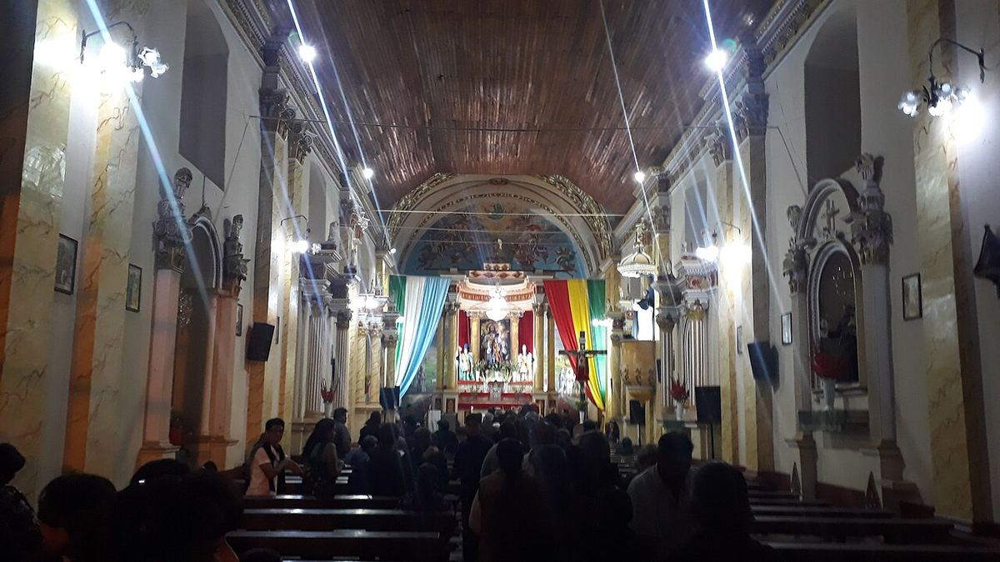


Cochabamba, la ciudad
La ciudad está a media hora de Tiquipaya. Ahí están el hospital de referencia, la universidad y los mercados donde se compra al por mayor.


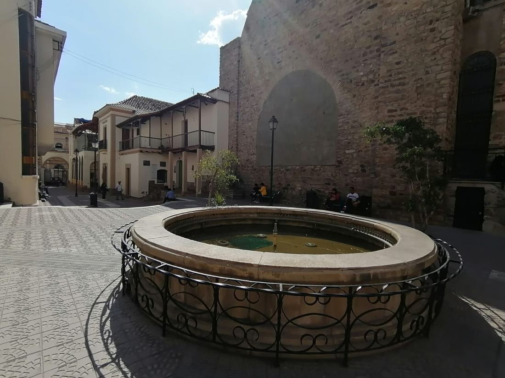

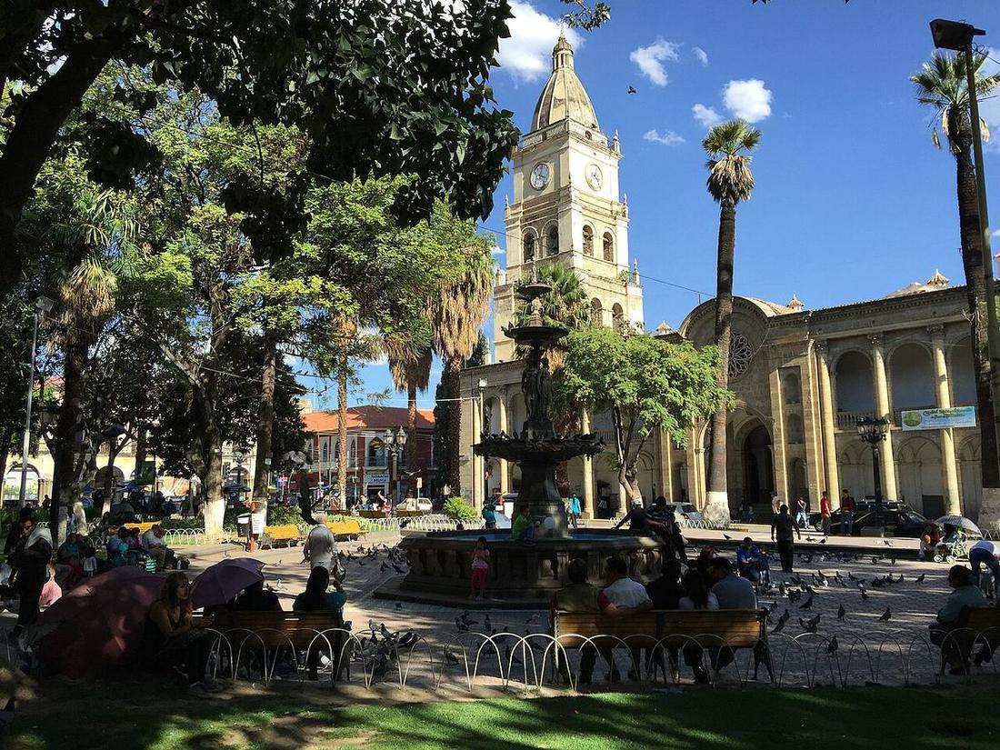

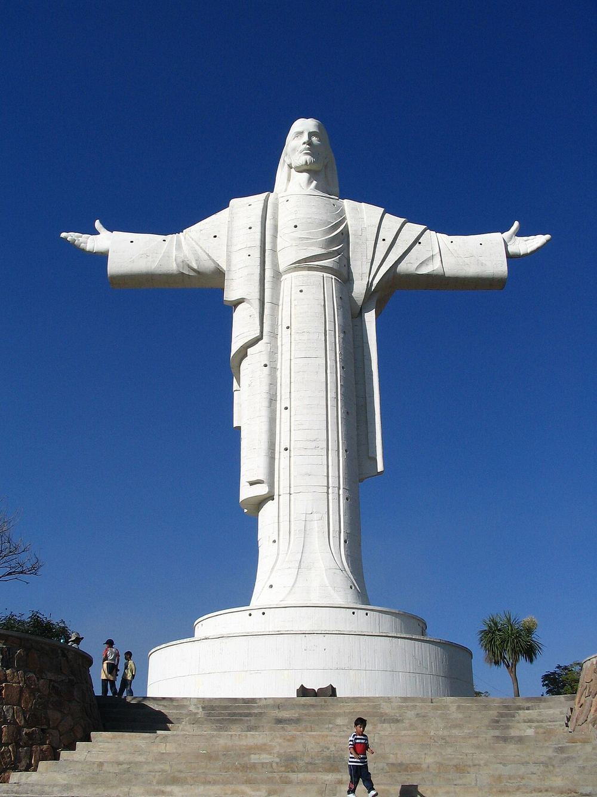

El valle y el trabajo de la tierra
La agricultura es la base de la economía del valle: maíz, trigo, hortalizas y frutales. De ahí sale buena parte de lo que se cocina en el huerto escolar.


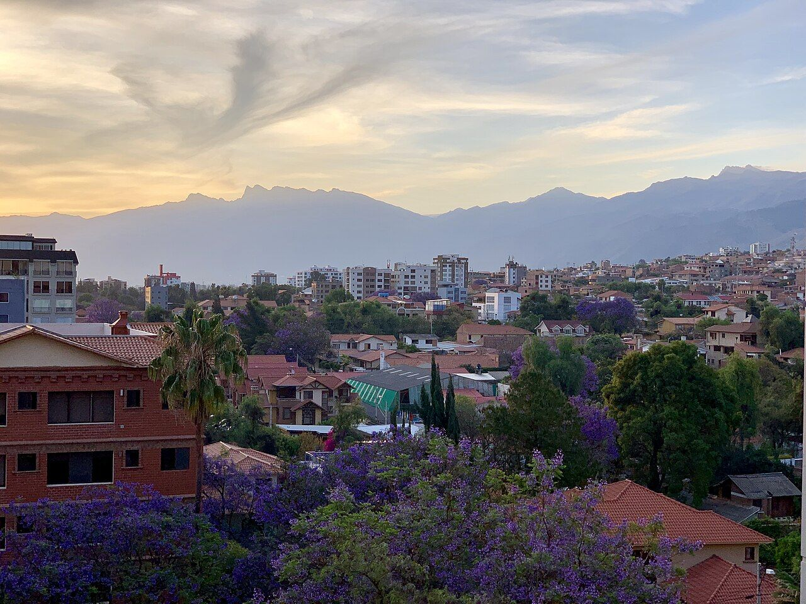

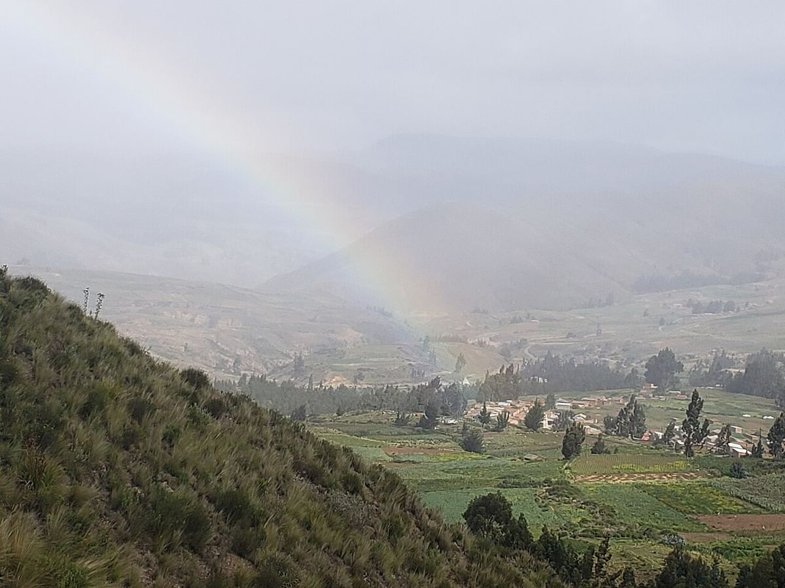

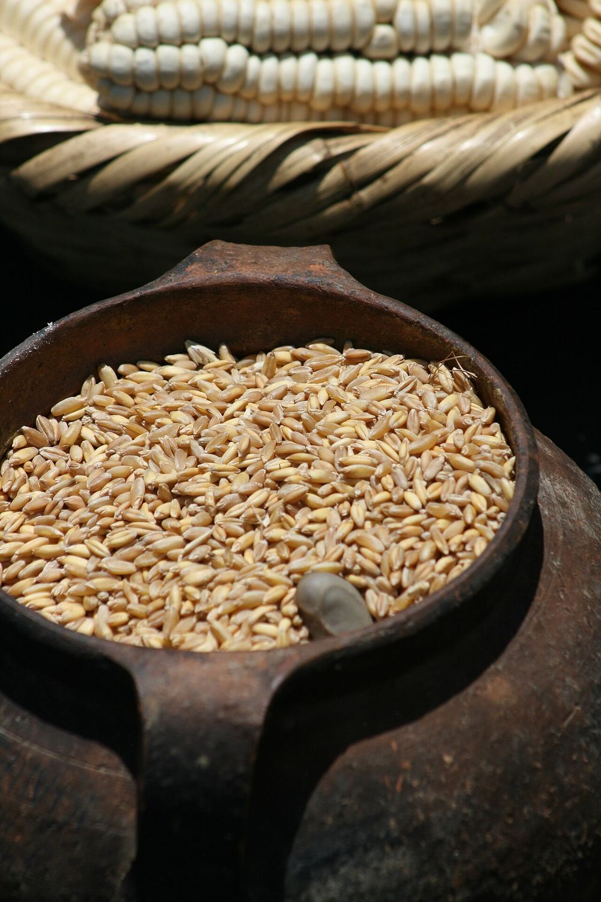

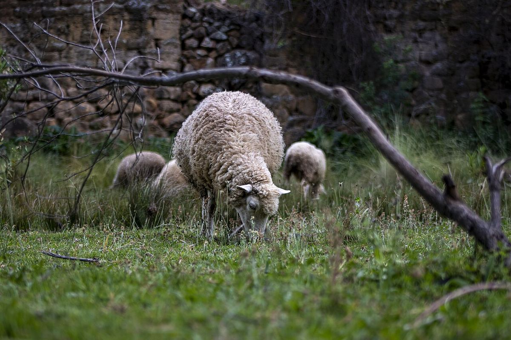

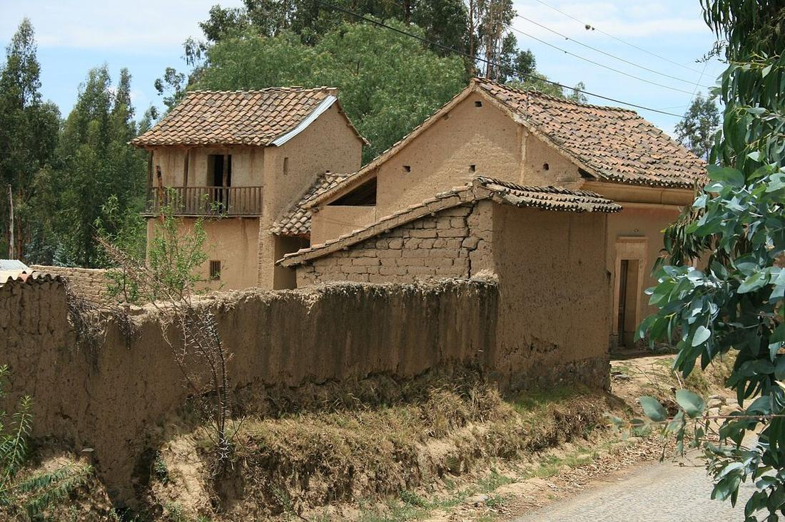

Mercados y oficios
En los mercados del valle se compra, se vende y se aprende. Son también el lugar donde muchas de las familias que acompañamos pasan la semana.


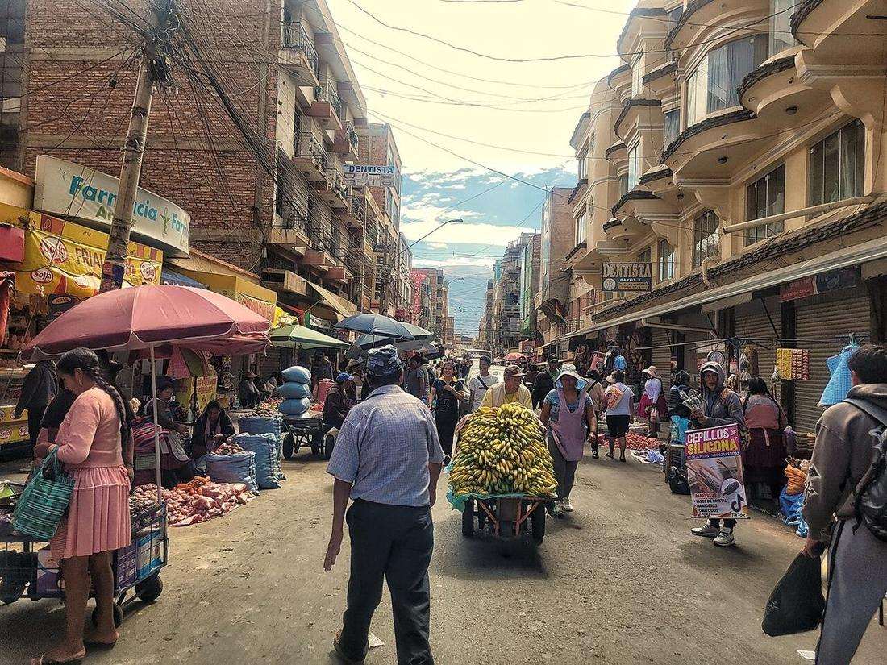

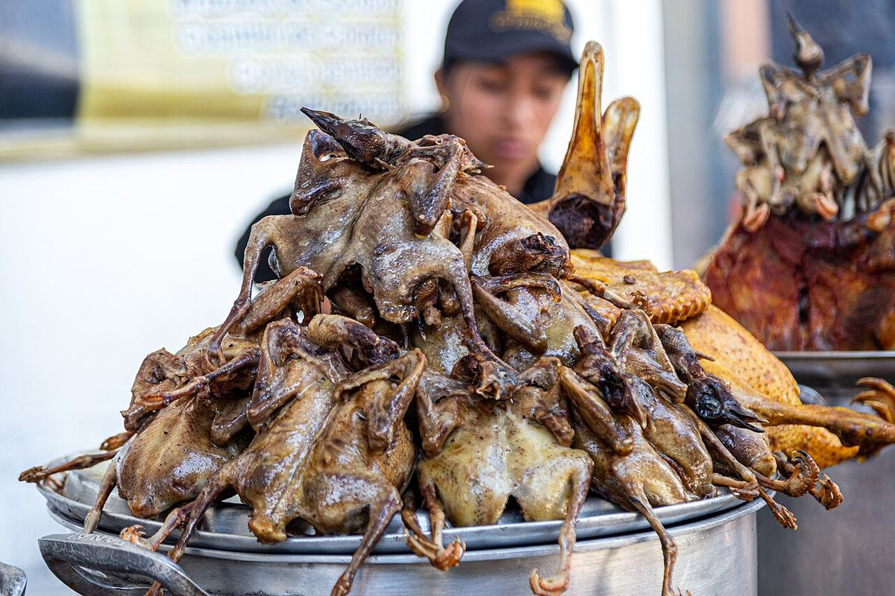


Faltan las fotos que importan
Ninguna de estas imágenes muestra lo que realmente hacemos: la escuela, el huerto, las jornadas de salud, las madres en la escuela de familias. Son las que faltan, y no las vamos a suplir con fotos de archivo de otras personas.
Si tienes fotos de nuestras actividades y quieres que aparezcan aquí, escríbenos.